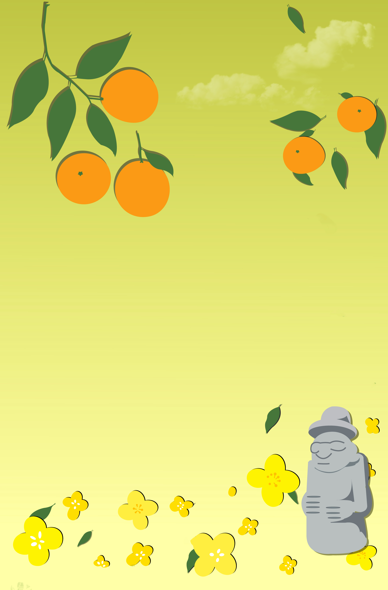

ⓒ 2020 Starbucks Coffee Company.
Starbucks
City collection
서울의 노을 지는 하늘과 서울의 상징인 여러 조형물과 장소가 함께 디자인 된 상품입니다.
현대적인 건축과 전통의 문화유산들이 어우러져 있는 도시의 특징을 표현하고자 하였습니다.
SS Seoul Tour Tumbler
대한민국에 들어오는 가장 큰 문, 인천을 소개하는 상품입니다.
하늘에는 매 순간 뜨고 내리는 비행기가 있고, 그 아래는 푸르른 인천 바다를 그려 시원한 하늘색으로 표현 하였습니다.
SS Incheon Tour Tumbler
벚꽃이 흐드러지는 봄의 경주를 디자인 한 상품입니다.
도시 전체가 박물관인 경주를 나타내기 위해 다양한 유물 및 유적지를 수채화 느낌으로 표현하였고, 특히 첨성대 위에는 별 등을 함께 그려 넣어 신비로운 경주를 나타내었습니다.
SS Gyeongju Tour Tumbler

밤 하늘의 불꽃처럼 화려한 관광의 도시, 부산을 소개하는 상품입니다.
대한민국에서 손꼽히는 관광 도시임을 나타내기 위해 화려한 분위기로 디자인 하였으며, 이와 함께 외국인들이 주로 찾는 감천문화마을을 아기자기 하게 표현하였습니다.
SS Busan Tour Tumbler

봄이 되면 노랗게 물 드는 대한민국의 가장 큰 섬 제주를 소개하는 상품입니다.
자연과 가까운 섬의 모습을 나타내기 위해 주로 연두색, 노란색 등의 컬러를 사용하여
여러 특징적인 요소들을 동화책 그림처럼 표현하였습니다.
SS Jeju Tour Tumbler